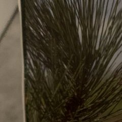
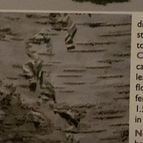
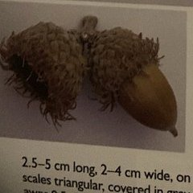
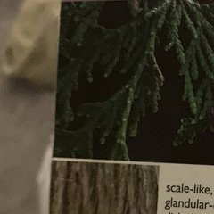
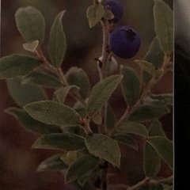
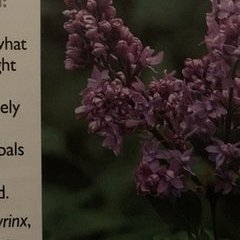
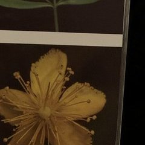
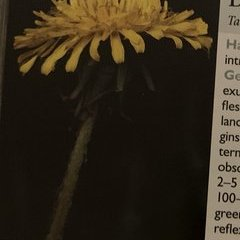
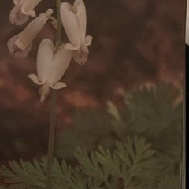

|
Trees (4)
Wildflowers (3)
Canada Elderberry NEW! |
Plant CatalogueEntries are grouped by the categories I use in my notes. This list is not complete. Trees
 Red PinePinus resinosa
Where: Dry, rocky or sandy areas.
Look for: Long evergreen needles in pairs, reddish-brown bark and brown cones.
Notes: The species name resinosa means “resin-bearing.”
 Paper BirchBetula papyrifera
Where: Dry sandy hillsides to moist woods.
Look for: White papery bark that peels easily and oval-to-diamond-shaped leaves.
Notes: The species name papyrifera means “paper-bearing,” a reference to the bark.
 Burr OakQuercus macrocarpa
Where: Valley bottoms, often on poorly drained soils.
Look for: Deeply lobed leaves and large acorns with thick, fringed cups.
Notes: The species name macrocarpa means “large-fruited.”
 Eastern White CedarThuja occidentalis
Where: Moist to wet ground, from swamps to limestone ridges.
Look for: Flat sprays of small evergreen scale-like leaves and shredding grey-brown to reddish bark.
Notes: “Arborvitae” means “tree-of-life.” Its vitamin-C-rich leaves are credited with helping save Jacques Cartier’s crew from scurvy in the winter of 1535–36.
Shrubs & Woody Vines
 BlueberryVaccinium myrtilloides
Where: Dry, sandy woods.
Look for: A low shrub with small leaves, pale bell-shaped flowers and edible blue berries.
Notes: The species name myrtilloides means “like a little myrtle.”
 LilacSyringa vulgaris
Where: Edges of woods and roadsides.
Look for: A tall shrub with bright green leaves and fragrant lilac-to-white flower clusters.
Notes: Introduced from Europe as an ornamental and able to spread by its roots. The name Syringa comes from a Greek word meaning “pipe,” a reference to the hollow stems.

Canada ElderberrySambucus nigra ssp. canadensis
Where: Low-lying ground, swamps and forest edges.
Look for: A shrub with compound leaves, broad clusters of white flowers and purplish-black berry-like fruit.
Notes: Sambucus is the Latin name for elderberry. The species name canadensis means “of Canada,” the native range of this shrub.
Wildflowers
 St. John’s-wortHypericum perforatum
Where: Waste areas, dry open fields and roadsides.
Look for: Bright yellow flowers and leaves with tiny translucent dots when held to the light.
Notes: The common name refers to the belief that these plants bloom on St. John’s Day, June 24.
 DandelionTaraxacum officinale
Where: Waste areas, roadsides and lawns.
Look for: A yellow flower head on a hollow stem with milky sap and deeply toothed basal leaves.
Notes: The common name comes from the French dents de lion, meaning “lion’s teeth.” Young leaves can be eaten in salads and roasted roots can be used as a coffee substitute.
 Squirrel-cornDicentra canadensis
Where: Rich woods.
Look for: Greenish-white, nodding flowers above finely divided grey-green leaves.
Notes: The genus name Dicentra comes from the Greek word for “2-spurred,” a reference to the flowers.
|